今天发现了一个很有意思的项目，将聊天机器人应用到微信上，因此尝试搭建一下
项目源出处：https://github.com/zhayujie/chatgpt-on-wechat?tab=readme-ov-file
steps
环境
- Windows 10 专业版
- docker desktop
- wget 工具
- ollama
准备工作
1. 安装 docker desktop
在控制面板中 -> 程序 -> 启用或关闭windows功能 -> 勾选Hyper-V、适用于Linux的Windows子系统、虚拟机平台
点击“确定” -> 重启电脑
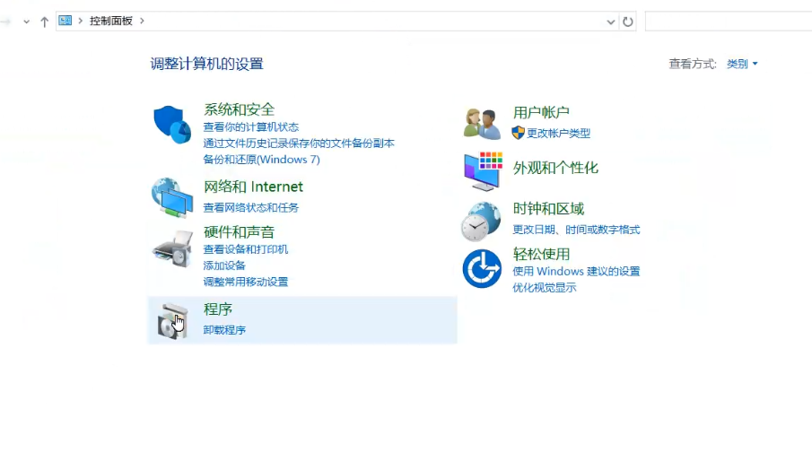2. 安装wsl
管理员模式 打开 powershell 输入以下命令
wsl --update
wsl --install注意:在执行wsl --install（这个命令可能要魔法）
注册账号和密码，之后会安装一个linux系统
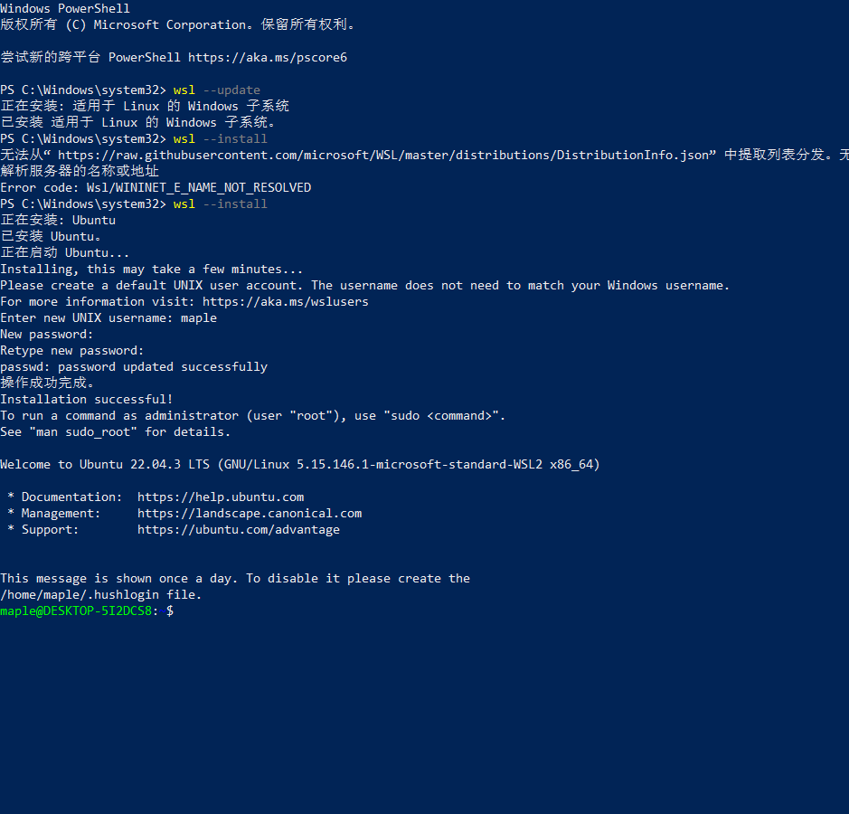安装完成后重启电脑
注意:如果没有执行前面的部分，安装的docker后，界面将会是空白
3. 安装 docker
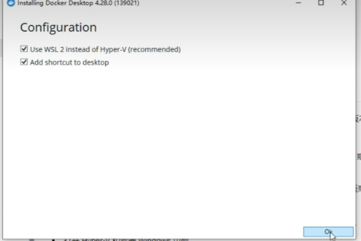安装完成后会自动重启电脑(如果没有重启,建议手动重启一下)
重启电脑后再次打开docker，若启动docker后看到侧边栏有容器、图像等字样说明安装成功
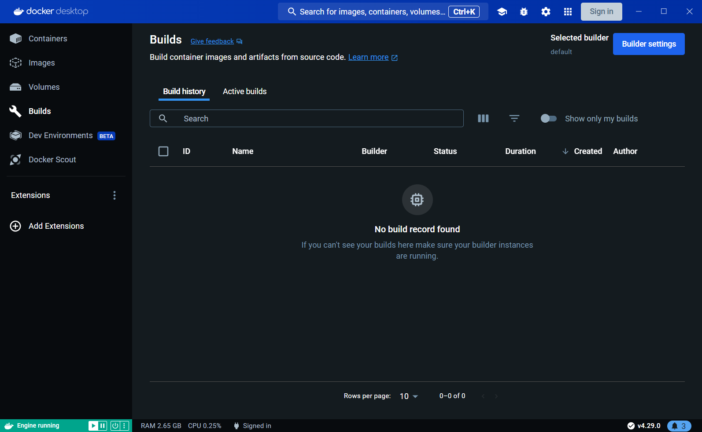也可以使用以下命令验证是否安装成功(cmd)
docker -v
docker compose version4. docker 部署 fastgpt
在FastGPT创建一个应用
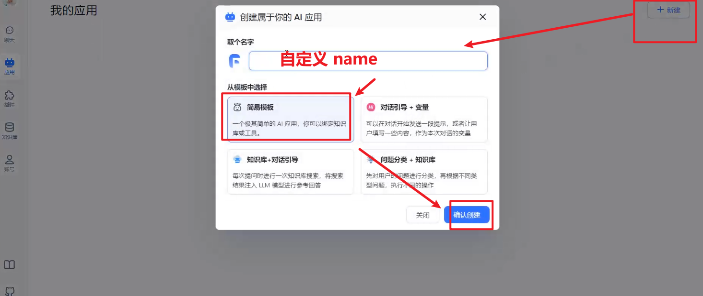创建完应用后，进去刚刚创建的应用，配置AI模型，测试一下刚刚创建的应用的ai模型是否能使用
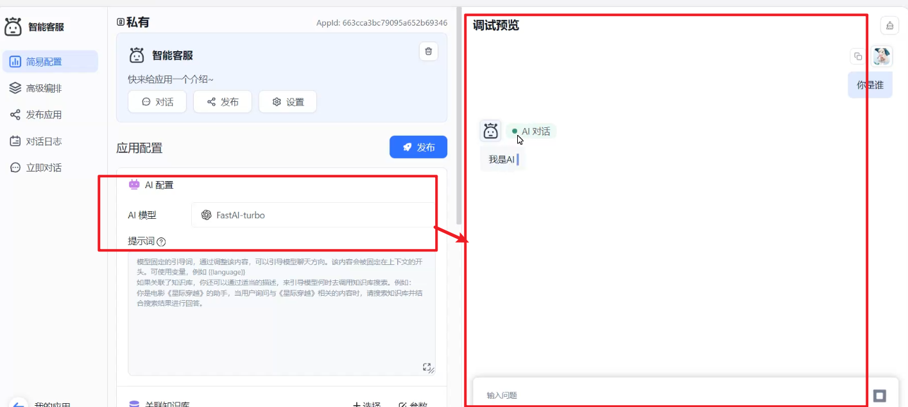根据官方文档下载config.json
如果你是Linux用户的话,可以通过命令行下载
下载完后,打开docker,直到右下角变绿(启动成功后)
打开你的两个文件的所在处（我这里新建了一个chatgpt-on-wechat目录来存放这两个文件），然后cmd执行命令
docker-compose up安装过程非常慢，成功后的状态
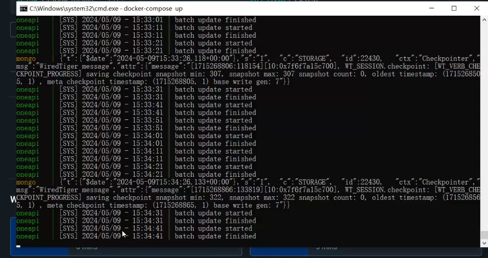此时docker desktop容器里就可以看到了
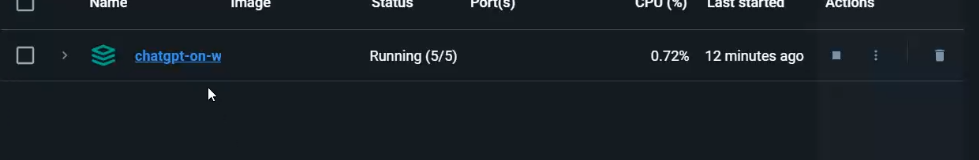双击点击去，所在路径是你刚刚执行docker-compose up的所在目录
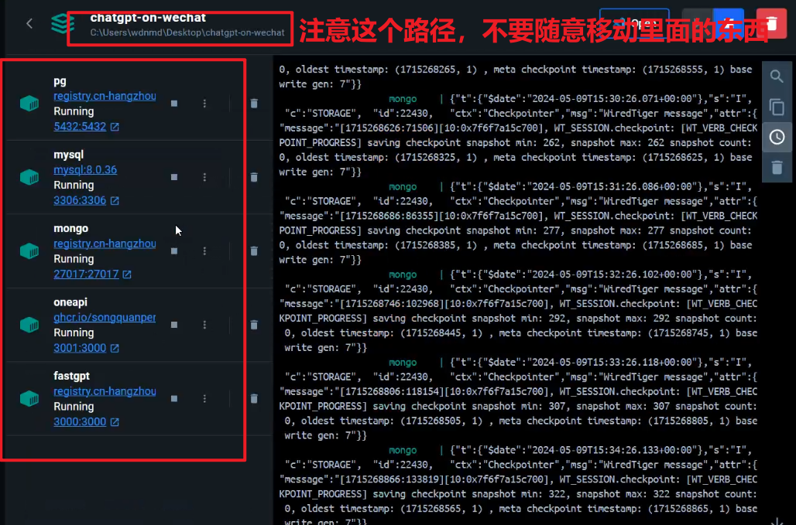然后运行localhost:3000，运行登录进去fastgpt（默认账号：root，密码：1234），测试成功
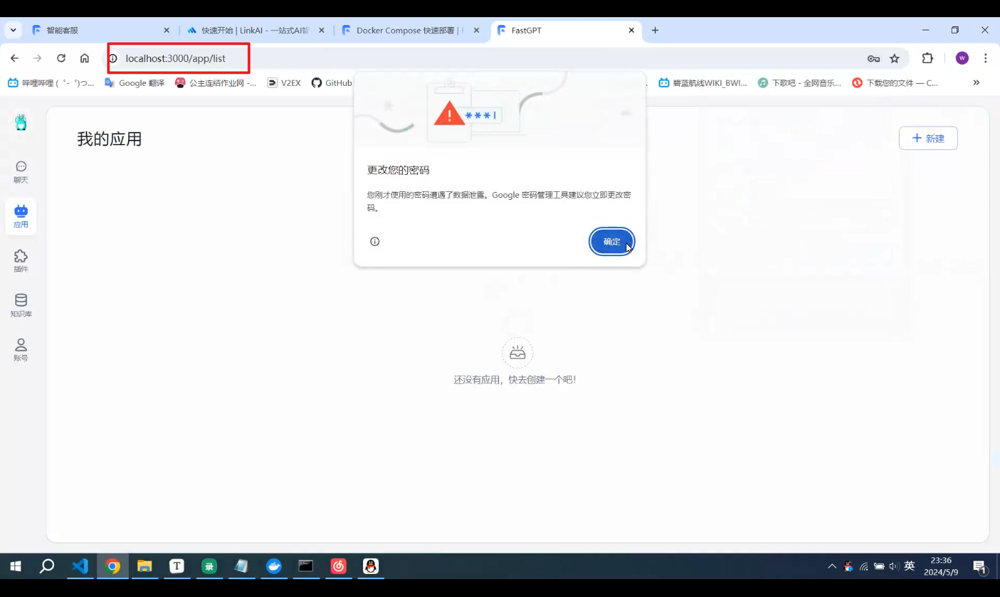此时你要重新创建一下应用（前面的创建只是为了演示fastgpt的使用）
注意:此时的AI模型只有三个，而这三个你是没有权限的（如果有openAPI账号，可以在后续中ollama里配置
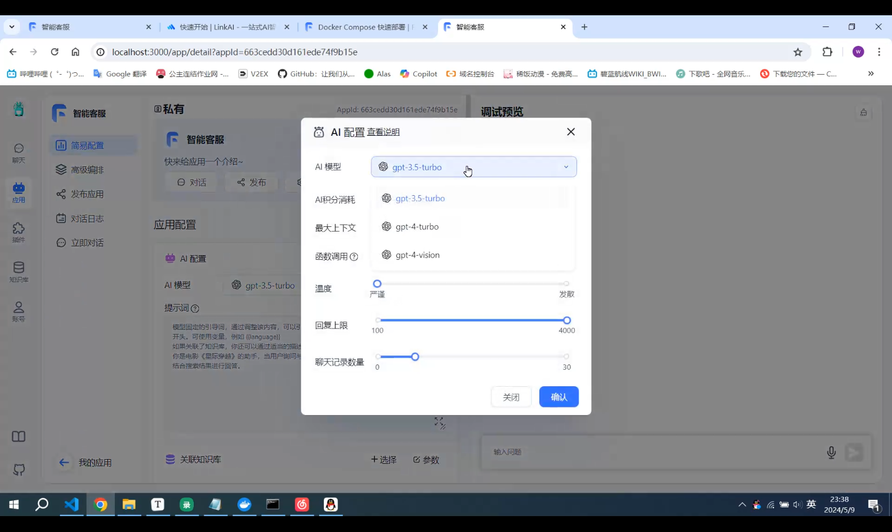发布应用，创建的fastgpt密钥
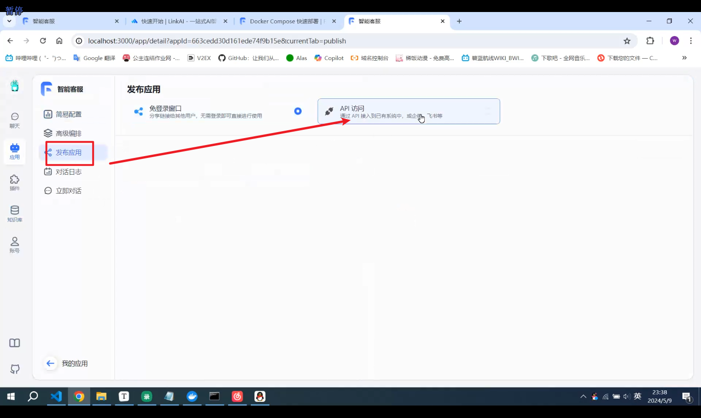 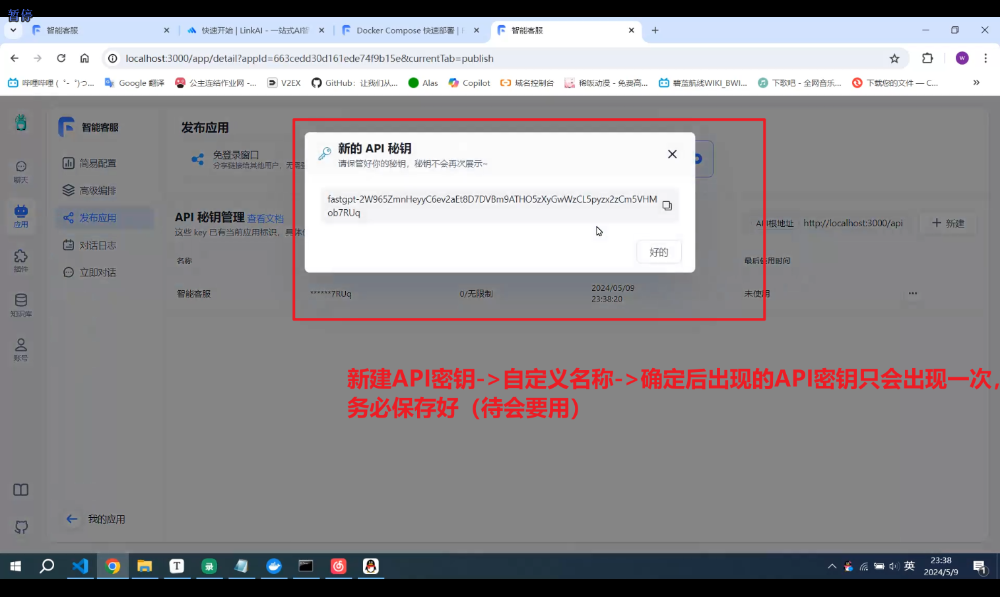5. 配置wget(因为Windows没有自带的wget工具,需要手动下载,Linux用户可以跳过此步骤)
访问wget官网，下载wget压缩包
解压压缩包后,将其配置到环境变量当中
部署微信机器人
找到微信机器人项目
新建一个目录，名字为chatgpt-on-wechat，这个与你上面的docker部署fastgpt的目录名字是一样的
然后根据项目的快速搭建，在这个项目运行。将这个文件替换掉你之前下载的文件
然后在cmd中运行
wget https://open-1317903499.cos.ap-guangzhou.myqcloud.com/docker-compose.yml修改这个docker-compose.yml配置文件
version: '2.0'
services:
chatgpt-on-wechat:
image: zhayujie/chatgpt-on-wechat
container_name: chatgpt-on-wechat
security_opt:
- seccomp:unconfined
environment:
OPEN_AI_API_KEY: 'fastgpt-DlzLulpesfJIrbPKKmEbsgyqFBLg7xeh70bpYRws3ZMYbDYgZtXOB8dtUwnV'
OPEN_AI_API_BASE: 'http://host.docker.internal:3000/api/v1'
MODEL: 'gpt-3.5-turbo'
PROXY: ''
SINGLE_CHAT_PREFIX: '["bot", "@bot"]'
SINGLE_CHAT_REPLY_PREFIX: '"[bot] "'
GROUP_CHAT_PREFIX: '["@bot"]'
GROUP_NAME_WHITE_LIST: '["九转寿司"]'
IMAGE_CREATE_PREFIX: '["画", "看", "找"]'
CONVERSATION_MAX_TOKENS: 1000
SPEECH_RECOGNITION: 'False'
CHARACTER_DESC: '你是ChatGPT, 一个由OpenAI训练的大型语言模型, 你旨在回答并解决人们的任何问题，并且可以使用多种语言与人交流。'
EXPIRES_IN_SECONDS: 3600
USE_GLOBAL_PLUGIN_CONFIG: 'True'
USE_LINKAI: 'False'
LINKAI_API_KEY: ''
LINKAI_APP_CODE: ''修改的部分
- OPEN_AI_API_KEY: 填入你刚刚创建的fastgpt应用的密钥
- 新增:OPEN_AI_API_BASE: 'http://host.docker.internal:3000/api/v1'
- 修改GROUP_NAME_WHITE_LIST，值为你的微信群的名称
重启docker，运行
docker-compose up此时，你的docker会多了一个容器
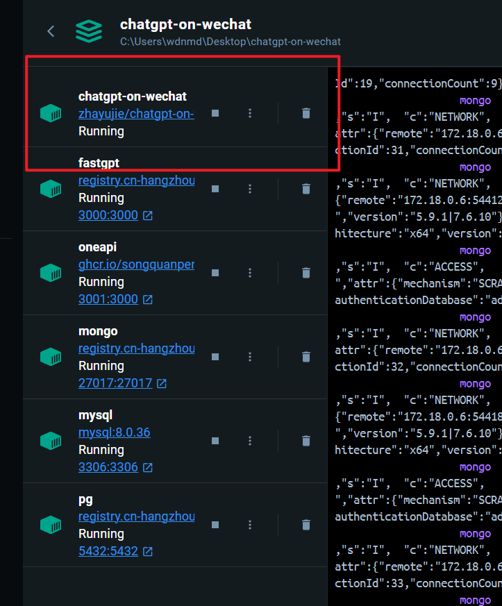稍等片刻，然后微信扫码
注意:这里Windows的cmd有个毛病，弹出的二维码你扫不了
但是非常幸运的是，docker里面可以看到你的cmd日志信息，在那里可以扫描
如果登录的时候，登录确认了但是遇到了问题
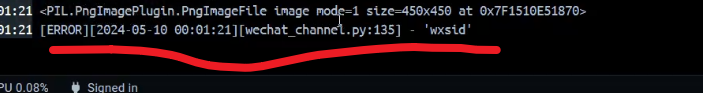原因是由于你的微信是刚刚注册的，微信权限管控的限制，你必须使用相对注册较久的账号
扫码登录确认后，就可以用其他微信号@这个机器人发送消息了
此时又遇到了一个问题，就是用的chatgpt3.5是没有余额的
安装ollama ,搭建一个本地的AI
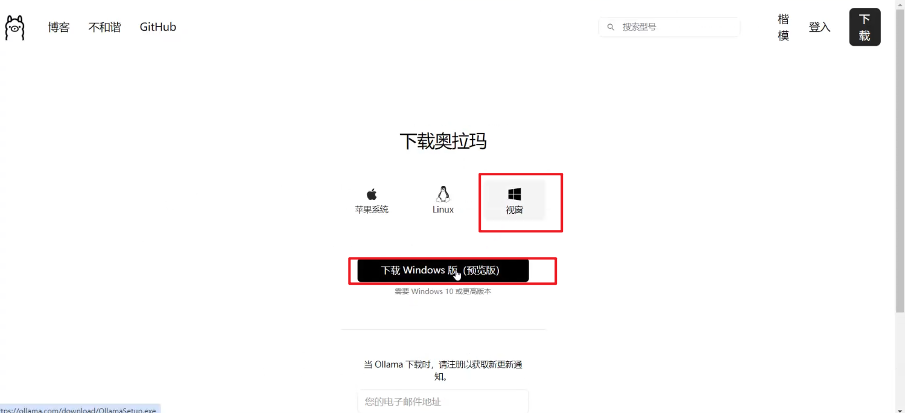安装完成后,通过cmd验证是否安装成功
ollama --version在刚刚的ollama官网中,下载一个模型,这里使用的是qwen模型
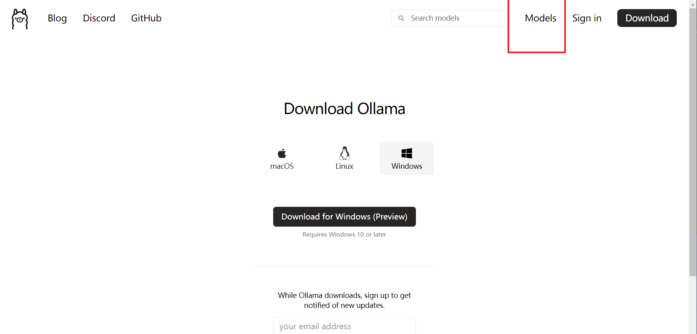将下载模型的命令复制到cmd中
ollama run qwen:7b下载完后可以通过ollama list查看是否有下载成功
接着再次重启docker
访问One API（localhost:3001）
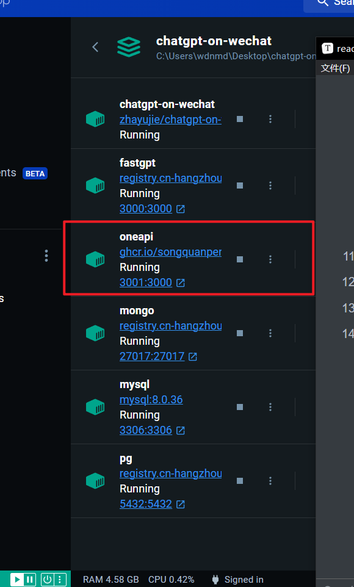登录oneAPI（默认账号：root 密码：123456）
添加渠道
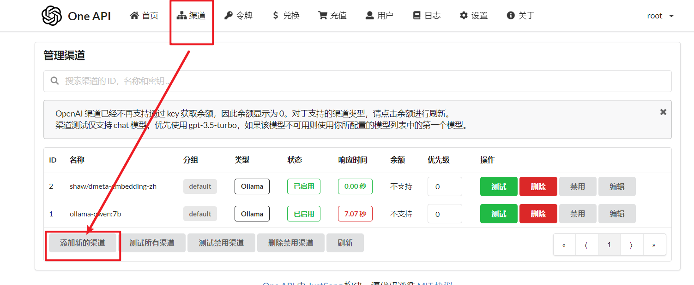↓这里的名称，是后续你在fastgpt里看到的模型的名称
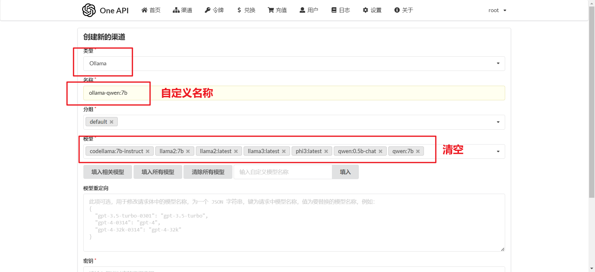填入的模型是你刚刚下载的模型，可以通过cmd的ollama list查看你的模型名称，再填进去
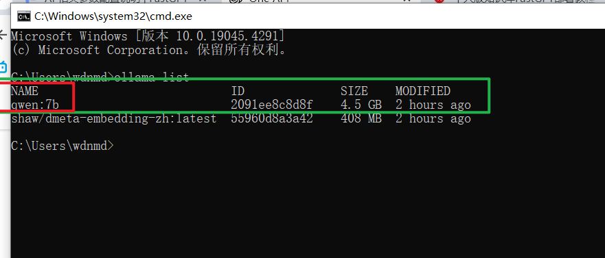 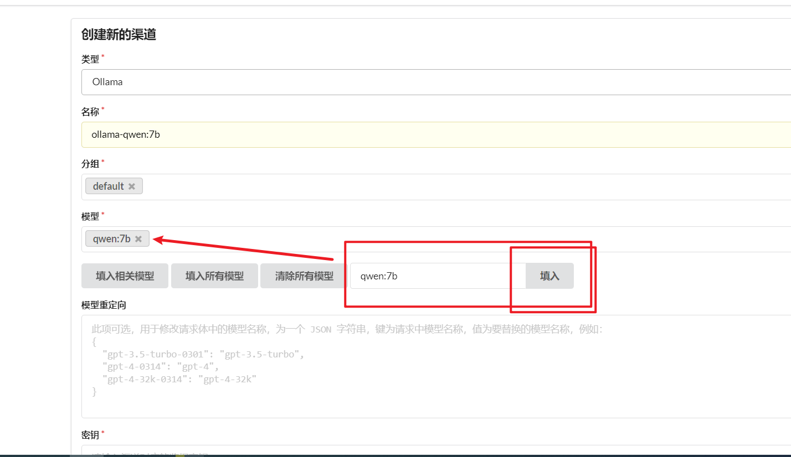 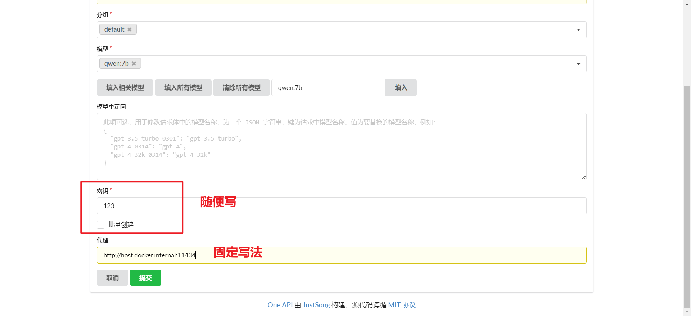提交完毕后，出去测试一下,测试所需响应时间根据电脑不同而不同
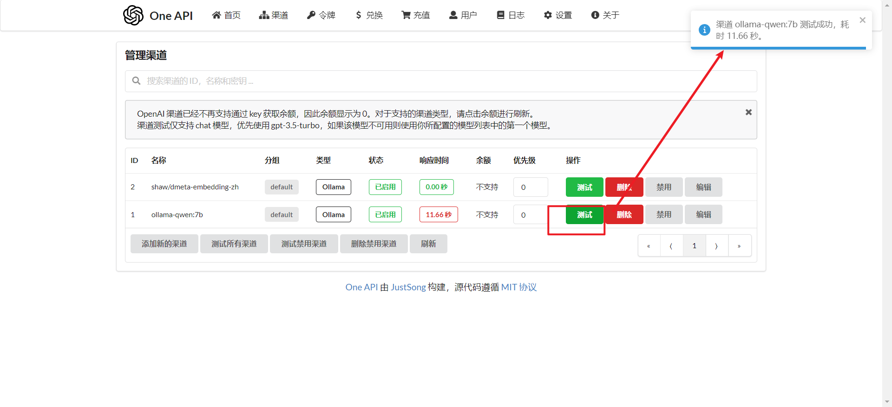去到目录文件config.json中，添加自己的模型
赋值某一个，然后修改model和name即可
model和name是你刚刚创建渠道对应的名字
"llmModels": [
{
"model": "gpt-3.5-turbo",
"name": "gpt-3.5-turbo",
"maxContext": 16000,
"avatar": "/imgs/model/openai.svg",
"maxResponse": 4000,
"quoteMaxToken": 13000,
"maxTemperature": 1.2,
"charsPointsPrice": 0,
"censor": false,
"vision": false,
"datasetProcess": true,
"usedInClassify": true,
"usedInExtractFields": true,
"usedInToolCall": true,
"usedInQueryExtension": true,
"toolChoice": true,
"functionCall": true,
"customCQPrompt": "",
"customExtractPrompt": "",
"defaultSystemChatPrompt": "",
"defaultConfig": {}
},
{
"model": "gpt-4-0125-preview",
"name": "gpt-4-turbo",
"avatar": "/imgs/model/openai.svg",
"maxContext": 125000,
"maxResponse": 4000,
"quoteMaxToken": 100000,
"maxTemperature": 1.2,
"charsPointsPrice": 0,
"censor": false,
"vision": false,
"datasetProcess": false,
"usedInClassify": true,
"usedInExtractFields": true,
"usedInToolCall": true,
"usedInQueryExtension": true,
"toolChoice": true,
"functionCall": false,
"customCQPrompt": "",
"customExtractPrompt": "",
"defaultSystemChatPrompt": "",
"defaultConfig": {}
},
{
"model": "gpt-4-vision-preview",
"name": "gpt-4-vision",
"avatar": "/imgs/model/openai.svg",
"maxContext": 128000,
"maxResponse": 4000,
"quoteMaxToken": 100000,
"maxTemperature": 1.2,
"charsPointsPrice": 0,
"censor": false,
"vision": true,
"datasetProcess": false,
"usedInClassify": false,
"usedInExtractFields": false,
"usedInToolCall": false,
"usedInQueryExtension": false,
"toolChoice": true,
"functionCall": false,
"customCQPrompt": "",
"customExtractPrompt": "",
"defaultSystemChatPrompt": "",
"defaultConfig": {}
},
{
"model": "qwen:7b",
"name": "ollama-qwen:7b",
"maxContext": 16000,
"avatar": "/imgs/model/openai.svg",
"maxResponse": 4000,
"quoteMaxToken": 13000,
"maxTemperature": 1.2,
"charsPointsPrice": 0,
"censor": false,
"vision": false,
"datasetProcess": true,
"usedInClassify": true,
"usedInExtractFields": true,
"usedInToolCall": true,
"usedInQueryExtension": true,
"toolChoice": true,
"functionCall": true,
"customCQPrompt": "",
"customExtractPrompt": "",
"defaultSystemChatPrompt": "",
"defaultConfig": {}
}
],此时重启docker，再次进入fastgpt后可以看到可以选择本地模型ollama-qwen:7b的
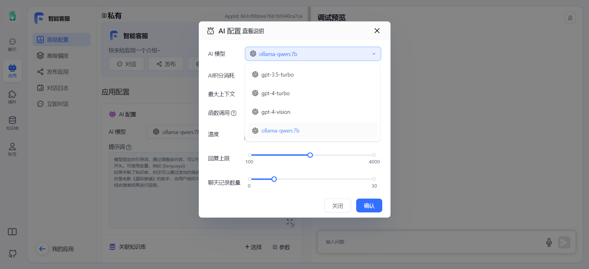选择此模型后，测试一下是否可以使用
重新运行，扫码登录，即可使用微信机器人
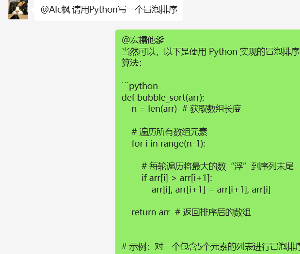至此，部署微信机器人成功